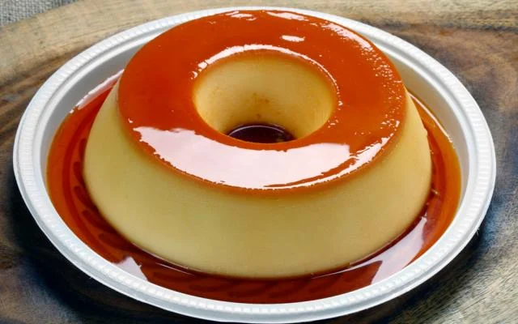

Veja mais de doces

Pão de mel

Pudim

 Ta fácil
Ta fácil
 10min
10min
Se você está procurando uma receita de mousse de limão rápida e fácil, veio ao lugar certo! Essa receita é feita com suco de limão, sem gelatina e leva apenas 4 ingredientes! Confira agora mesmo como fazer!
omo toda história muito antiga, esta também conta com outras versões, como a de que o Mousse nasceu na Roma antiga, de uma mistura de mel com vinho que eles chamavam de "muslum", que posteriormente com as adaptações de línguas virou "mulsa" e que logo depois virou "mousse", quando feito na Inglaterra. Mas sinceramente, acredito que a primeira opção faça muito mais sentido.